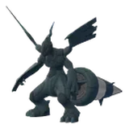
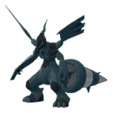
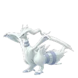
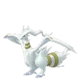
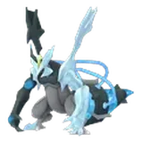

聚焦時刻、團體戰時間、極巨星期一、團體戰頭目與對戰聯盟一次看
2026 年 11 月 Pokémon GO 活動行事曆
11 月是「黃昏之旅」賽季的最後一個月，活動排得很滿：上半月是曠野週與曠野地帶：全球，下半月接著巨大足跡、駒刀小兵社群日、黃昏時分的心願和皮可西極致超級團體戰日。這頁把整個月的聚焦時刻、團體戰時間、極巨星期一、團體戰頭目輪替和 GO 對戰聯盟賽程按日期排好，今天的項目會自動標出來，有獨立攻略的活動可以直接點進去看細節。
本月重點活動
 IV100 CP 1699
IV100 CP 1699曠野週
曠野地帶的前導週：前兩晚是蒼響（劍之王）、藏瑪然特（盾之王）的團體戰時間，11/11～11/13 每天換一隻傳說極巨對戰，極巨化雷吉鐸拉戈在 11/12 首度登場。
 IV100 CP 1753
IV100 CP 1753曠野地帶 2026：全球
兩天 10:00～18:00，超極巨化鋁鋼龍首度登場，週六極巨化帝牙盧卡、週日極巨化帕路奇亞；每小時輪替鋼與龍屬性棲息地，入場券 US$11.99。

巨大足跡
整週的極巨對戰活動，能量點變多、捕捉活動寶可夢有機會拿到極巨粒子；11/21 11:00～14:00 無極巨化無極汰那再次佔領大部分能量點。
 IV100 CP 819
IV100 CP 819駒刀小兵社群日
14:00～17:00，活動期間或結束後 4 小時內讓劈斬司令進化，可得到會「仆斬」的仆斬將軍。
黃昏時分的心願
「黃昏之旅」賽季的壓軸活動：戴圍巾的太陽伊布與月亮伊布在三星團體戰登場，海星星與小灰怪的異色機率提高，另有活動 GO Pass。
 IV100 CP 1392
IV100 CP 1392皮可西極致超級團體戰日
14:00～17:00，超級皮可西在極致超級團體戰首度登場，並可以提升到新的超級等級「超級頂尖級」；入場券 US$4.99。
11 月每日行程
依開始日期排序，今天的項目會標出來。時間為當地時間（台灣即台灣時間）；GO 對戰聯盟官方以太平洋時間 13:00 輪替，下面已換算成台灣日期（隔天 05:00 切換）。
- 11/1–11/510:00–20:00活動萬聖節 2026 Part 2異色墓仔狗首度登場；超級勾魂眼可以提升到「超級頂尖級」。
- ～11/4台灣 05:00 輪替對戰聯盟大師聯盟・超級萬聖節盃：超級聯盟版對戰勝利的星星沙子 4 倍。
- 11/2（一）06:00–21:00極巨星期一極巨星期一：極巨化腕力能量點刷新更頻繁、數量更多；極巨化腕力在 11/2～11/8 的極巨對戰出現。
- 11/3–12/110:00 起活動GO Pass：11月 →免費版可遇見固拉多、拿寶可幣；11/28～11/29 GO點數沒有每日上限。
- 11/4–11/11台灣 05:00 輪替對戰聯盟超級聯盟：超級版・高級聯盟：超級版・大師聯盟：超級版可以使用超級進化寶可夢；對戰勝利的星星沙子 4 倍。
- 11/4–11/806:00 起五星團體戰五星團體戰：騎拉帝納（別種形態）
- 11/4–11/8週末暗影團體戰暗影團體戰：暗影龍捲雲（化身形態）
- 11/4（三）18:00–19:00團體戰時間團體戰時間：騎拉帝納（別種形態）
- ～11/8至 22:00超級團體戰超級團體戰：超級勾魂眼10/28 開始的輪替。
- 11/5（四）18:00–19:00聚焦時刻聚焦時刻：戴著魔女帽的熊寶寶加成：進化獲得的 XP 加倍。
- 11/6–11/8登入領取限時調查限時調查：超極巨化怪力強化週！ →免費，完成後遇見超極巨化怪力；11/15 23:59 前完成。
- 11/9–11/1310:00–20:00活動曠野週 →傳說團體戰是蒼響（劍之王）與藏瑪然特（盾之王）；遠距團體戰上限 30 次。
- 11/9（一）18:00–19:00團體戰時間團體戰時間：蒼響（劍之王） →
- 11/10（二）18:00–19:00團體戰時間團體戰時間：藏瑪然特（盾之王） →
- 11/11–11/18台灣 05:00 輪替對戰聯盟超級聯盟・高級聯盟：超級版・2026 GO Championship拉丁美洲盃
- 11/11–11/13全天＋18:00–19:00傳說極巨對戰傳說極巨對戰：每天換一隻 →11/11 雷吉斯奇魯、11/12 雷吉鐸拉戈（首度登場）、11/13 拉帝亞斯與拉帝歐斯；18:00～19:00 也會在一般極巨對戰出現。
- 11/14–11/15每天 10:00–18:00活動Pokémon GO 曠野地帶 2026：全球 →超極巨化鋁鋼龍首度登場；傳說團體戰週六捷克羅姆與焰白酋雷姆、週日萊希拉姆與闇黑酋雷姆。
- 11/14–11/19每天 17:00–21:00 較多活動小隕星雨：獅子座流星雨 →地圖上可遇見小隕星（流星的樣子），捕捉時獲得更多星星沙子。
- 11/16–11/2310:00–20:00活動巨大足跡 →所有曾登場的極巨化寶可夢（傳說、幻之除外）都可能在極巨對戰出現，能量點變多；另有 GO Pass：巨大足跡。
- 11/16（一）06:00–21:00極巨星期一極巨星期一：寶可夢官方尚未公布能量點刷新更頻繁、數量更多。
- 11/16–11/2406:00 起五星團體戰五星團體戰：克雷色利亞、達克萊伊
- 11/16–11/2406:00 起超級團體戰超級團體戰：超級詛咒娃娃
- 11/16–12/1週末暗影團體戰暗影團體戰：暗影龍捲雲（化身形態）期間內的週末出現。
- 11/18（三）18:00–19:00團體戰時間團體戰時間：克雷色利亞、達克萊伊
- 11/19–11/26台灣 05:00 輪替對戰聯盟高級聯盟・大師聯盟：超級版・2026 GO Championship拉丁美洲盃對戰勝利的星星沙子 4 倍。
- 11/19（四）18:00–19:00聚焦時刻聚焦時刻：敲音猴、炎兔兒、淚眼蜥 →加成：捕獲寶可夢時的糖果加倍。
- 11/21（六）11:00–14:00傳說極巨對戰無極汰那再襲 →無極巨化無極汰那佔領大部分能量點，打倒後不能捕捉，但可拿大量無極汰那的糖果與糖果XL。
- 11/21（六）14:00–17:00社群日駒刀小兵社群日 →孵蛋距離 1/4、糖果加倍；特別招式「仆斬」。
- 11/23（一）06:00–21:00極巨星期一極巨星期一：極巨化妙喵極巨化妙喵在 11/23～11/29 的極巨對戰出現。
- 11/24–11/3010:00–20:00活動黃昏時分的心願 →賽季壓軸活動；活動期間超級團體戰是超級大針蜂、超級黑魯加、超級勾魂眼、超級雷電獸。
- 11/25–12/2台灣 05:00 輪替對戰聯盟大師聯盟・超級速成盃：超級聯盟版超級速成盃只能用本賽季捕捉的寶可夢；對戰勝利的星星沙子 4 倍。
- 11/25–12/106:00 起五星團體戰五星團體戰：代歐奇希斯（4 種形態）
- 11/25–12/106:00 起超級團體戰超級團體戰：超級巨金怪
- 11/25（三）18:00–19:00團體戰時間團體戰時間：代歐奇希斯（4 種形態）
- 11/26（四）18:00–19:00聚焦時刻聚焦時刻：嗡蝠加成：捕獲寶可夢時的糖果加倍。
- 11/28（六）14:00–17:00超級團體戰皮可西極致超級團體戰日 →超級皮可西首度登場；道館轉盤最多 6 張團體戰入場券，持票者 14 張。
- 11/30（一）06:00–21:00極巨星期一極巨星期一：極巨化幾何雪花極巨化幾何雪花在 11/30～12/6 的極巨對戰出現。


 本月團體戰頭目總覽
本月團體戰頭目總覽
依類型整理本月輪替的頭目，小字是出現期間；一般輪替在當天 06:00 換頭目。
五星／傳說團體戰
- 騎拉帝納別種形態・11/4–11/8IV100 CP 1931

 蒼響劍之王・曠野週IV100 CP 2845
蒼響劍之王・曠野週IV100 CP 2845
 藏瑪然特盾之王・曠野週IV100 CP 2384
藏瑪然特盾之王・曠野週IV100 CP 2384

捷克羅姆11/14IV100 CP 2307- 焰白酋雷姆11/14IV100 CP 2631


萊希拉姆11/15IV100 CP 2307
闇黑酋雷姆11/15IV100 CP 2631- 克雷色利亞11/16–11/24IV100 CP 1633
 達克萊伊11/16–11/24IV100 CP 2136
達克萊伊11/16–11/24IV100 CP 2136- 代歐奇希斯普通形態・11/25–12/1IV100 CP 1806
- 代歐奇希斯攻擊形態・11/25–12/1IV100 CP 1474
- 代歐奇希斯防禦形態・11/25–12/1IV100 CP 1299
- 代歐奇希斯速度形態・11/25–12/1IV100 CP 1645
超級團體戰
暗影團體戰期間內的週末
極巨星期一主角寶可夢出現一整週
傳說極巨對戰
11/9～11/15 的曠野週與曠野地帶期間，超級團體戰與暗影團體戰的頭目沒有另外公布。11/24～11/30「黃昏時分的心願」期間，活動公告的超級團體戰是超級大針蜂、超級黑魯加、超級勾魂眼與超級雷電獸，與一般輪替的超級巨金怪時間重疊，實際以遊戲內為準。11/16 的極巨星期一寶可夢官方尚未公布。
 攻略重點
攻略重點
- 週三、週四晚上 18:00 留給團體戰與聚焦時刻
團體戰時間在週三、聚焦時刻在週四，都是 18:00～19:00；11/9、11/10 曠野週另有週一、週二的團體戰時間。
- 11/21 一天兩個活動
11:00～14:00 打無極汰那拿糖果，14:00～17:00 接著是駒刀小兵社群日，中間沒什麼空檔，記得先補球、準備好團體戰入場券。
- 達克萊伊與克雷色利亞一起出
11/16～11/24 兩隻同時在五星團體戰，11/18 團體戰時間最集中；想湊滿兩隻的話，這週安排遠距或實體團。
- GO Pass 衝刺看 11/28～29
GO Pass：11月在 11/28～11/29 沒有每日點數上限，加上同時有黃昏時分的心願與皮可西團體戰日，是衝等級的好時機；獎勵要在 12/3 10:00 前領取。
- 賽季 12/1 結束
「黃昏之旅」賽季在 12/1 10:00 結束，超級速成盃只能用這個賽季抓到的寶可夢，想參加就趁月底前準備好隊伍。
 常見問題
常見問題
11 月的社群日是什麼時候？
2026 年 11 月 21 日（六）14:00～17:00，主角是駒刀小兵；部分加成（誘餌模組、交換相關）延長到 21:00。
11 月的聚焦時刻有哪些？
11/5 戴著魔女帽的熊寶寶（進化 XP 加倍）、11/19 敲音猴・炎兔兒・淚眼蜥（糖果加倍）、11/26 嗡蝠（糖果加倍），都是週四 18:00～19:00。11/12 目前沒有公布聚焦時刻。
11 月的團體戰時間是哪幾天？
11/4 騎拉帝納（別種形態）、11/9 蒼響（劍之王）、11/10 藏瑪然特（盾之王）、11/18 克雷色利亞與達克萊伊、11/25 代歐奇希斯，都是 18:00～19:00。
極巨星期一是幾點？
每週一 06:00～21:00，能量點刷新更頻繁、數量也比平常多；11 月有 11/2 腕力、11/23 妙喵、11/30 幾何雪花，11/16 尚未公布。
GO 對戰聯盟的盃賽幾點換？
官方公告以太平洋時間 13:00 輪替，換算台灣時間是隔天早上 05:00。